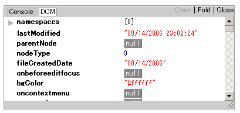

IEerBug - Debug Console for IE6
IEerBug is a debug console for JavaScript developers, which can be used on Internet Explorer 6.0 and FireFox 1.5.
IEerBug offers you a debug console, which can be used on same interface as FireBug (console.log(), console.debug(), and so on...).
How to use
Download ieerbug.zip, the source code and images for IEerBug. After you have downloaded, unzip and place files to your application's direcotry. You can make directory for IEerBug and put the files into it.
Include 'ieerbug.js' in your HTML file.
<script src="ieerbug.js"></script>
In JavaScript source file, write console output code. For example, when you write as...
console.debug("test");
console.debug("value is : %d %s", i, s);
console.debug("debug object : %o", {x : 3, y : 2});
console.info(document);
console.assert(a);
IEerBug's console displays the given values.

When you click [object Object], the details of the object are output.

The same thing happens when you click document object!

Overviews
- Supports most of FireBug Console Logging Functions.
- Never create HTML element and CSS classes except for one IFRAME element.
- Never pollute JavaScript global namespaces except for function 'IEerBug' and object 'console'.
- Never depends on any JavaScript libraries and can be used with any JavaScript libraries.
- Works on Internet Explorer 6.0, Mozilla FireFox 1.5.
Demo
Download and License
| date | version |
|---|---|
| 2006-09-30 | ieerbug-0-2.zip |
| 2006-08-28 | ieerbug-0-1.zip |
IEerBug is subject to the Mozilla Public License Version 1.1.
This is because FireBug is MPL and most of the IEerBug source code is quoted from FireBug. Special thanks for Joe Hewitt, the author of FireBug.
Document
You can setting IEerBug, giving parameters to ieerbug.js as below:
<script src="ieerbug.js?x=50&y=200"></script>
Parameter list is :
| name | value | default value |
|---|---|---|
| showJSErrors | Whether IEerBug's console shows JavaScript errors. | true |
| stopJSErrors | Whether IEerBug prevent from browser default JavaScript errors displayed. | true |
| x | Position of IEerBug window. | 50 |
| y | Position of IEerBug window. | 200 |
| width | Width of IEerBug window. | 500 |
| height | Height of IEerBug window. | 250 |
| debug | By default, if console object exists, IEerBug doesn't starts. If debug eqauls true, IEerBug always starts, even if FireBug is installed on your FireFox. |
false |
FAQ
- Opera and Safari...?
- Sorry, not supported... I'm waiting for your help.
- Source View and Debugger isn't supported in IEerBug?
- Sorry, not implemented. Source View may be implemented in the future.
- Ajax Request Spy isn't supported in IEerBug?
- In IE6.0, it would be possible to hook Ajax request by overwriting ActiveXObject function.
Change Log
- Version 0.2 (2006/9/30)
- Fixed console output issue with window object.
- Solved IE memory leak problem.